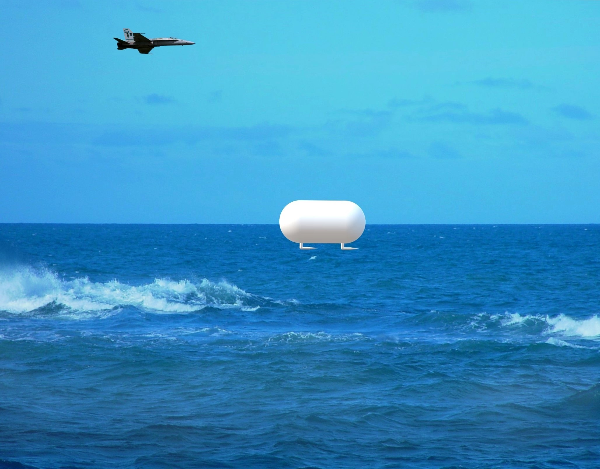

分類等級：TS//SCI//NOFORN
我們並不孤獨

美國政府已公開承認：天空上存在不明空中現象。
本資料庫整理自五角大廈、AARO、NASA、國會聽證會等公開來源。
◬ TOP 20 已被證實事件
附有官方影像、雷達數據、多名目擊者證詞之事件
檔案來源
- Pentagon AARO — 全域異常現象解析辦公室公開報告（2023-2024）
- U.S. Congress Hearings — 國會 UAP 聽證會公開紀錄（2022, 2023, 2024）
- NASA UAP Study — NASA 獨立研究小組報告（2023）
- FOIA Releases — 信息自由法公開文件
- Former Military Personnel Testimony — 前軍事人員證詞（David Grusch, Ryan Graves 等）